Интерьеры,в которых тихо
Проектируем дома, где хочется замедлиться: мягкий свет, честные материалы, ничего лишнего.
Мы не делаем «красиво для фото». Мы делаем так, чтобы в понедельник утром вам было спокойно: свет падает куда нужно, вещи на своих местах, а дом звучит тише города.
Проекты
Избранное · нажмите, чтобы открыть
Особняк в Барвихе
- Площадь
- 640 м²
- Срок
- 14 месяцев
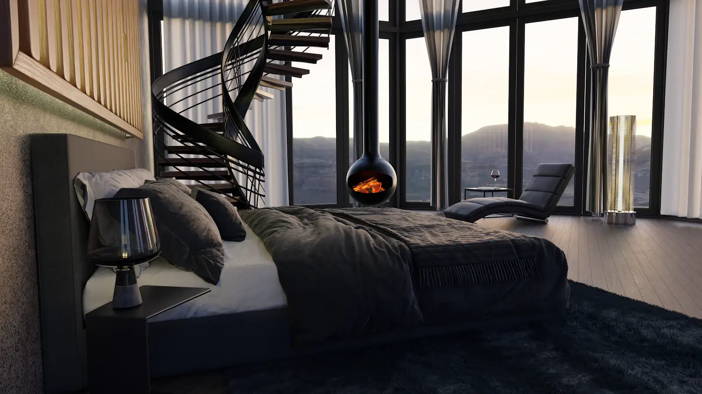
Пентхаус над городом
- Площадь
- 310 м²
- Срок
- 9 месяцев
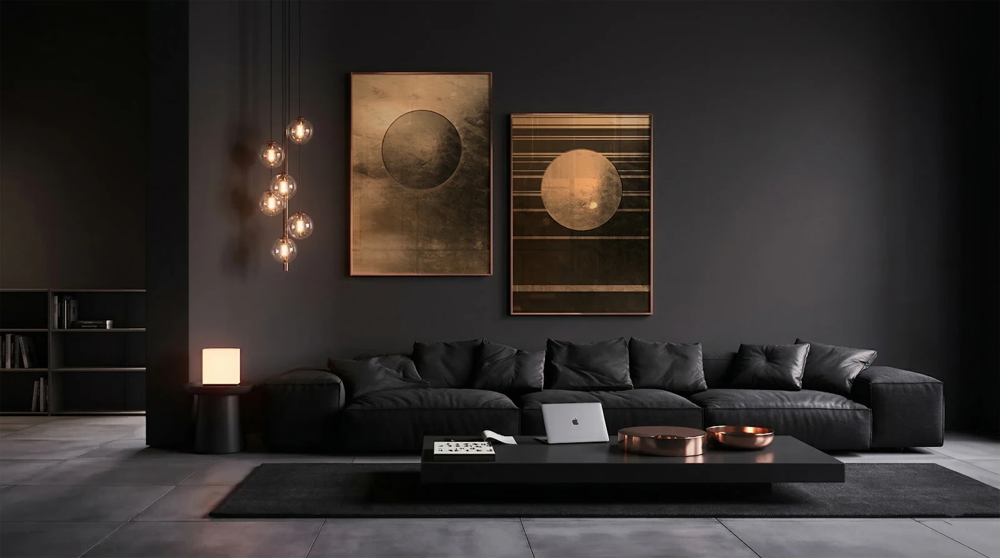
Квартира на Патриарших
- Площадь
- 165 м²
- Срок
- 7 месяцев
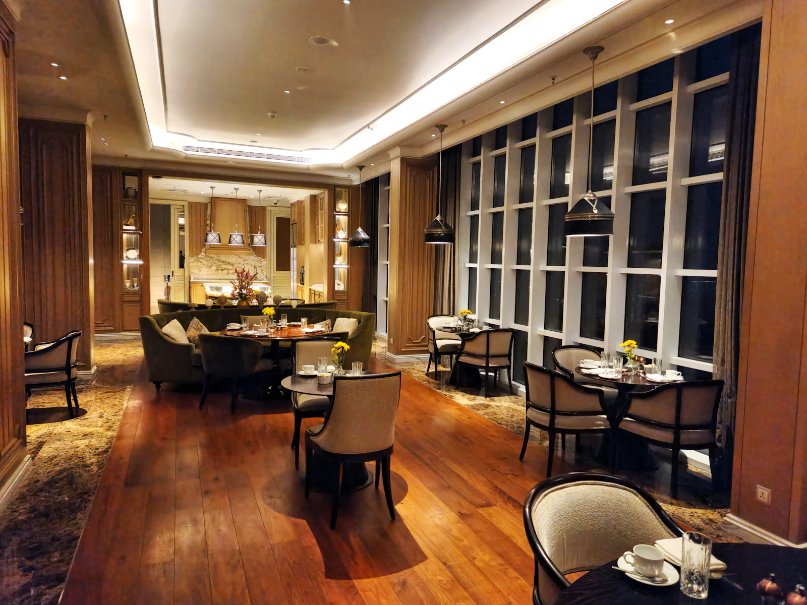
Ресторан «Латунь»
- Площадь
- 420 м²
- Срок
- 8 месяцев
От эскиза
до дома
Каждую комнату мы сначала рисуем от руки и только потом строим. Потяните ползунок: слева эскиз, справа тот же дом сегодня.
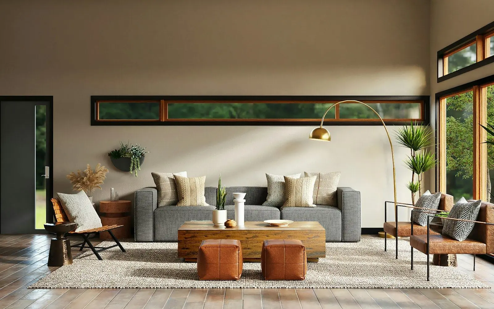
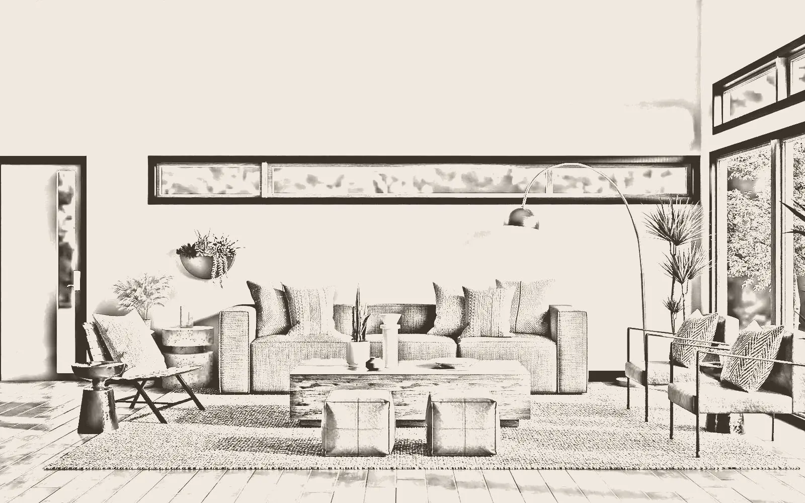
Что мы делаем
Ведём проект от первого обмера до последней лампочки. Вы приезжаете в готовый дом.
Планировка, коллажи, 3D-визуализации каждой комнаты и полный пакет чертежей для строителей. Три встречи, на которых решения принимаем вместе.
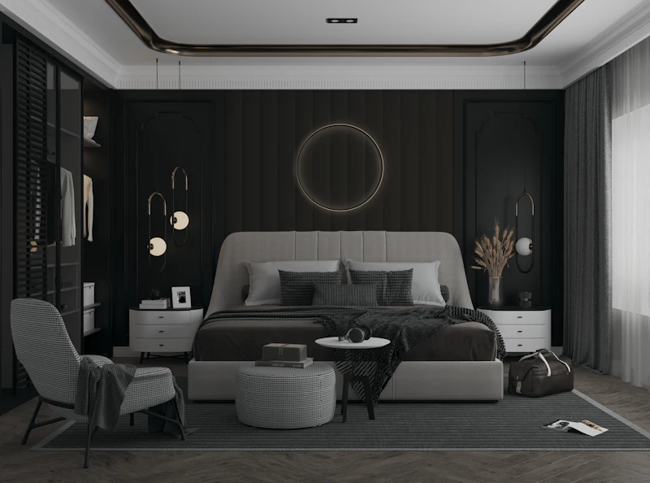
Приезжаем на объект, проверяем каждое решение и отвечаем строителям вместо вас. Вы получаете фотоотчёт раз в неделю.
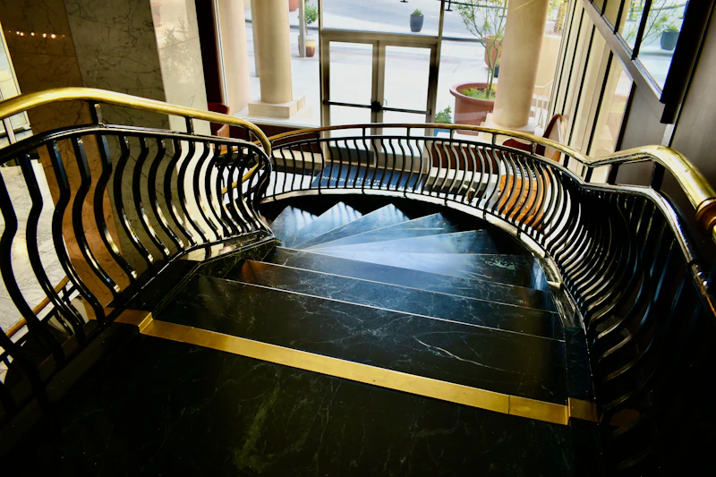
Подбираем и заказываем мебель, свет и текстиль. Все скидки поставщиков передаём вам, наш доход — фиксированная оплата.
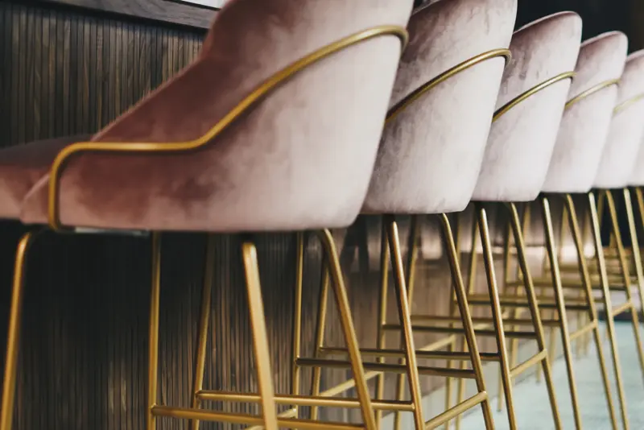
Проект, ремонт, мебель и декор одной командой. Вы отдаёте ключи от бетона и получаете их обратно от готового дома.
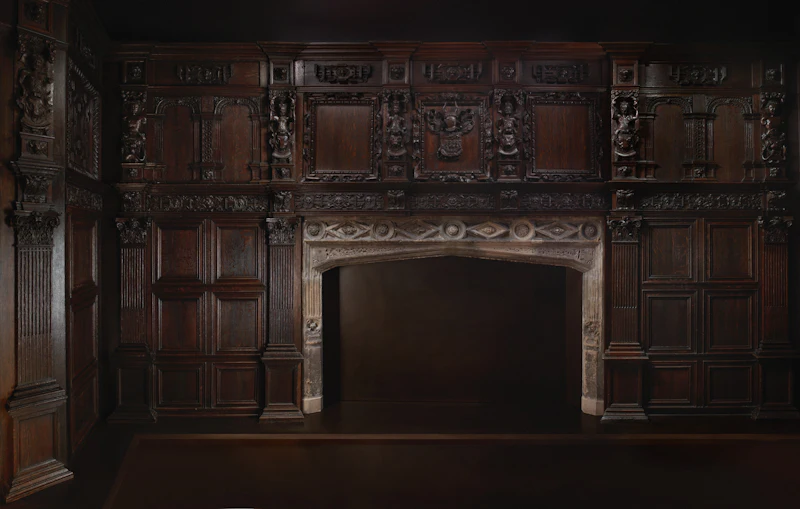
Пять шагов к тишине
Как мы работаем · 9–12 месяцевЗнакомство
Приезжаем на объект, делаем обмер и долго говорим о том, как вы живёте: кто встаёт раньше всех, где читаете, сколько у вас обуви.
Планировка
Три варианта расстановки стен и мебели. Выбираем один вместе — и больше к нему не возвращаемся.
Эскизы и 3D
Рисуем каждую комнату от руки, затем собираем фотореалистичные визуализации со всеми материалами.
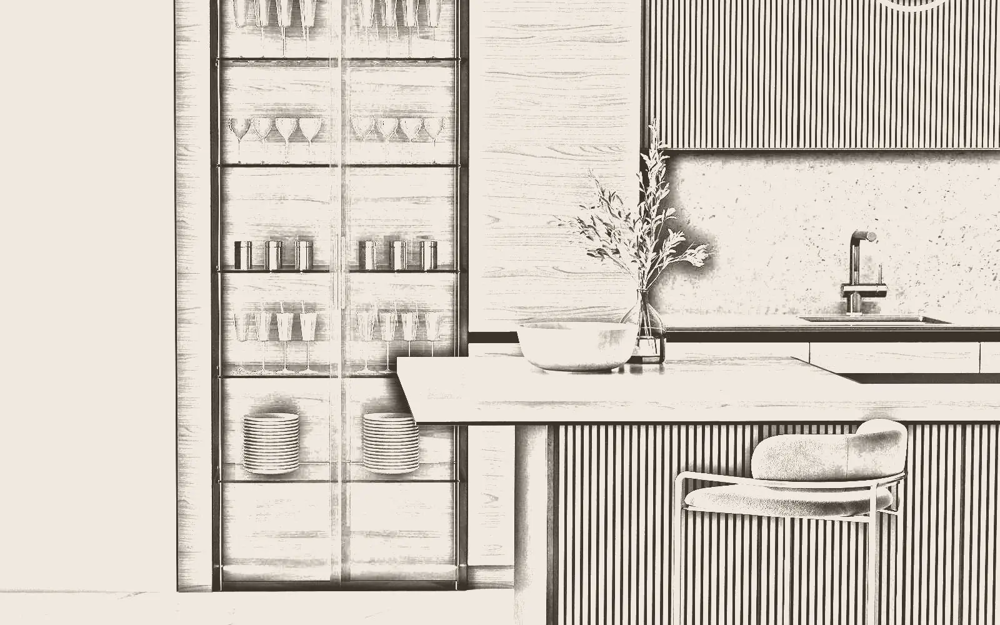
эскиз кухни, лофтЧертежи
Больше 60 листов для строителей: розетки, свет, раскладка плитки до миллиметра. Вопросов на стройке не остаётся.
Реализация
Надзор, комплектация, декор. В последний день расставляем книги и цветы — и отдаём вам ключи.
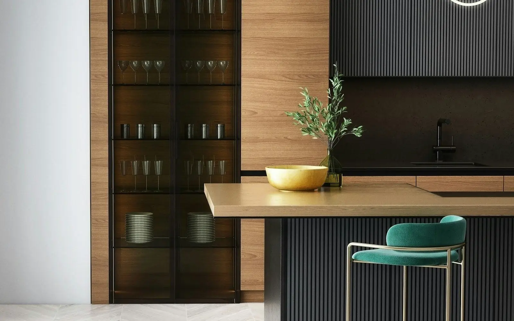
та же кухня сегодня«Мы переехали год назад и до сих пор не купили ни одной лишней вещи. Здесь просто нечего добавить».Елена и Андрей · Особняк в Барвихе